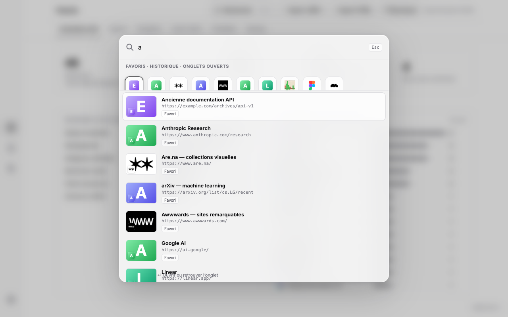
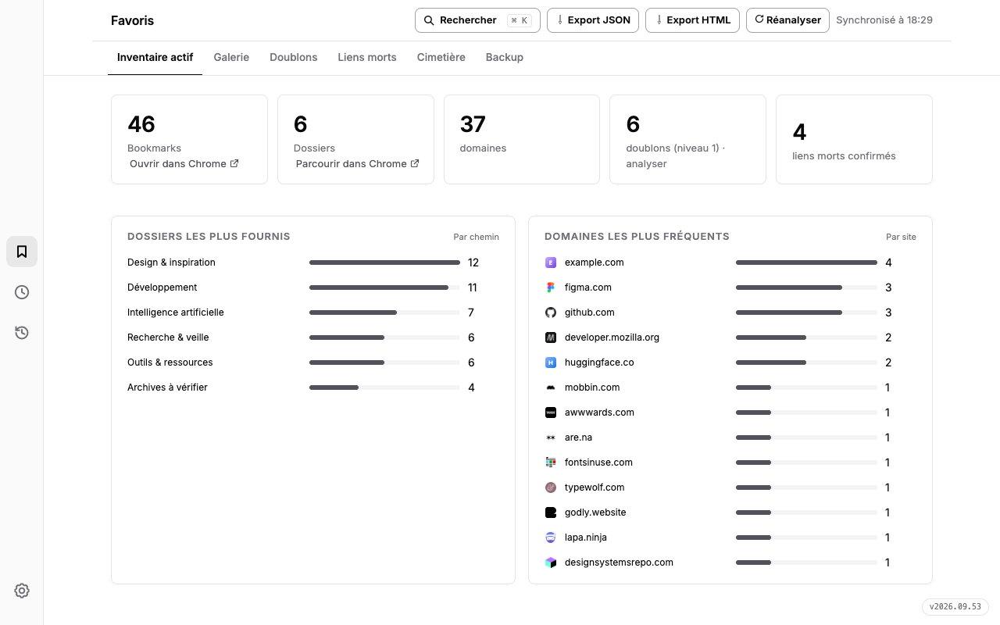
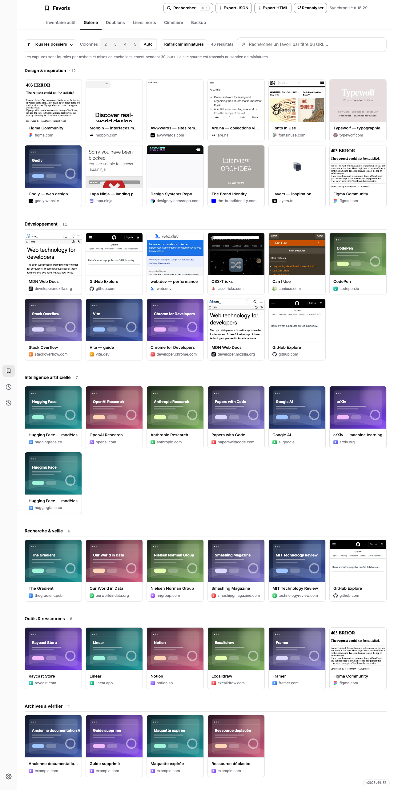
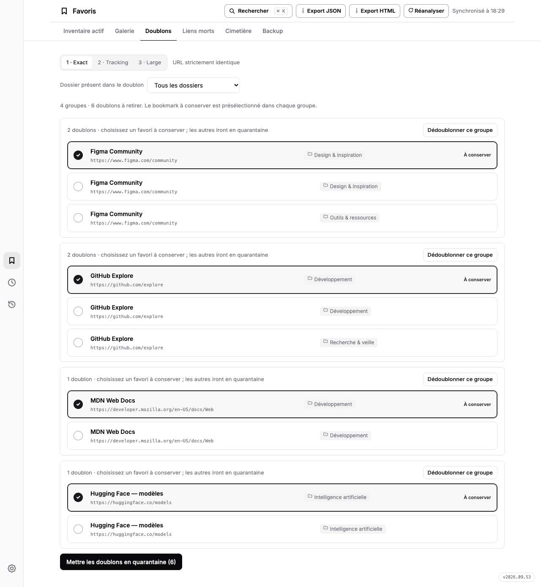
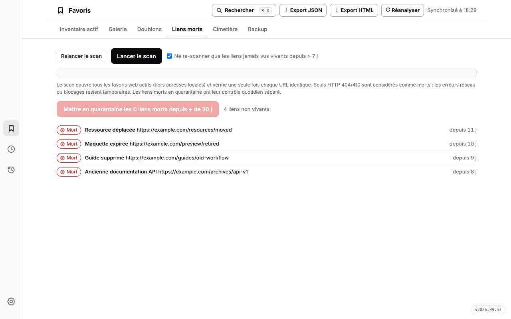
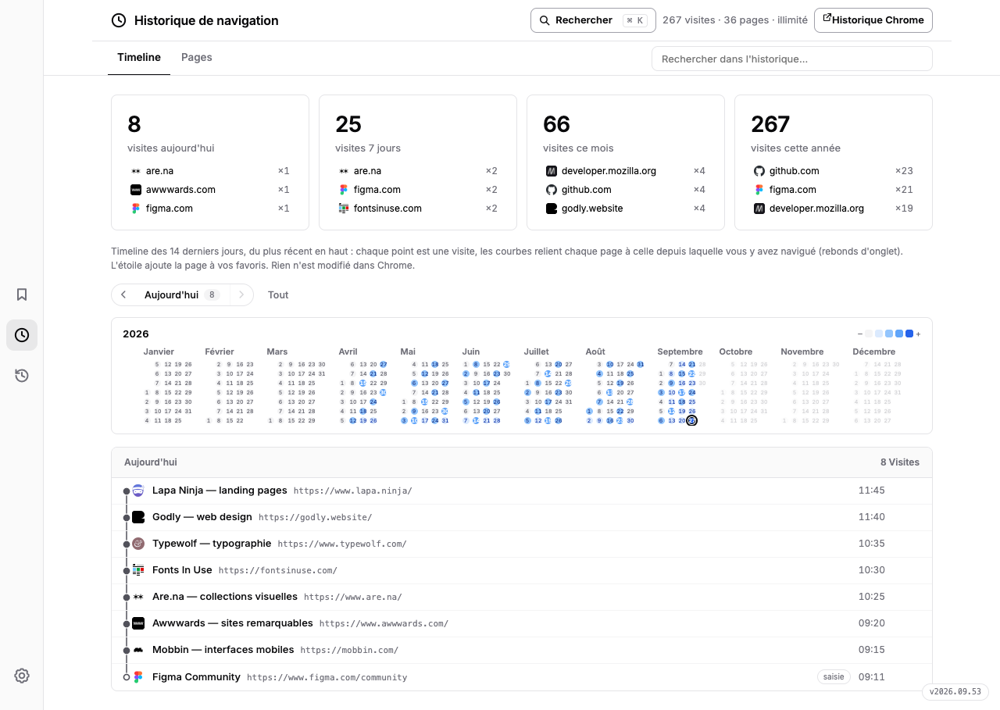

Les favoris conservés
Des milliers de liens accumulés, rangés dans des dossiers qu'on ne rouvre plus.
PK Web Memory
Favoris, historique et sessions réunis dans un seul espace.
Explorez, nettoyez, retrouvez.
« Votre navigateur se souvient de tout. PK Web Memory vous aide à y voir clair. »
↵ ouvrir · ⇥ retrouver l'onglet ouvert · échap fermer
Le problème
Des milliers de liens accumulés, rangés dans des dossiers qu'on ne rouvre plus.
Un historique plein de bruit, où retrouver une page d'il y a trois jours relève du hasard.
Trente onglets en attente, qu'on garde ouverts par peur de perdre le fil.
PK Web Memory réunit les trois — et rend lisible ce que Chrome accumule en silence.
Tout le terrain de jeu
Une palette façon Spotlight, activée au clavier ou à la moindre frappe. Elle cherche à la fois dans les favoris, l'historique et les onglets ouverts — ↵ ouvre le site, ⇥ retrouve l'onglet déjà ouvert.


Totaux, chemins de dossiers et domaines classés par fréquence, avec barres de progression et favicons. Votre collection devient un territoire lisible.

Vos favoris en miniatures : recherche, filtre par dossier, colonnes ajustables, cache local de 30 jours. Mode favicônes 100 % local disponible.

1 · URL stricte. 2 · sans tracking (utm, fbclid…). 3 · sans http/https, www ni paramètres. Vous choisissez ce qui reste.

Scan parallèle des URLs. Seuls les HTTP 404/410 confirmés sont déclarés morts — les erreurs temporaires restent à vérifier. Tout passe en quarantaine restaurable.

Votre navigation passée en vue arborescente, jour par jour. Retrouvez la page d'il y a trois jours en trois secondes, et ajoutez-la aux favoris d'un clic.

Exports JSON/HTML, historique local d'instantanés reliés entre eux (jusqu'à 30 versions). Restaurer rétablit les favoris manquants sans effacer les plus récents.
La pièce maîtresse
Une timeline fusionnée façon Tablerone : la session en cours reste dépliée en tête, les jours précédents se déplient sur place. Plus jamais d'onglets perdus.

Aussi, dans la barre d'outils
Le nombre d'onglets ouverts — ou d'onglets en double, la même page ouverte deux fois. Au choix dans les réglages, mis à jour en direct.
Ctrl+T ouvre l'extension directement sur la section choisie : sessions, galerie, inventaire ou historique. Votre nouvel onglet devient utile.
Les onglets dorment après 15, 30 ou 60 minutes d'inactivité — jamais l'onglet actif, les épinglés ou ceux qui jouent du son.
Vie privée
Favoris, visites, sessions, réglages et sauvegardes sont traités dans Chrome et conservés dans le stockage local de l'extension. Aucun compte, aucun analytics, aucune publicité.
Lire la politique de confidentialitéSoutenir
PK Web Memory est développé et maintenu par mondary.design. Si elle vous fait gagner du temps, un café sur Ko-fi aide à la faire vivre.
Soutenir sur Ko-fi